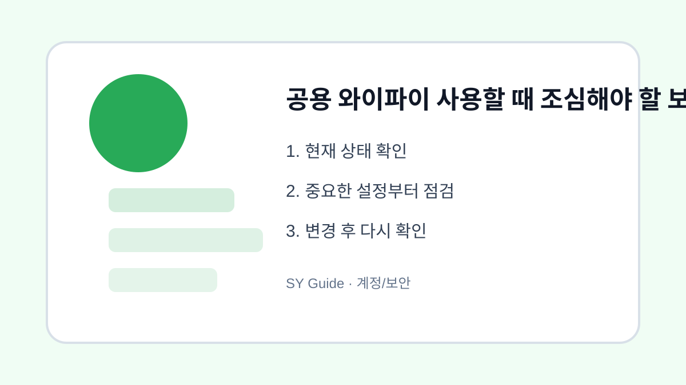

공용 와이파이 사용할 때 조심해야 할 보안 습관
카페, 공항, 숙소 공용 와이파이를 사용할 때 개인정보와 계정 보안을 지키는 기본 습관입니다.

공용 와이파이는 편리하지만 누구나 접속할 수 있다는 점에서 조심해야 합니다. 이름이 비슷한 가짜 와이파이에 연결하거나, 보안이 약한 페이지에서 로그인하면 계정 정보가 위험해질 수 있습니다. 공용망에서는 필요한 작업만 하는 것이 좋습니다.
자동 연결 끄기
예전에 접속한 공용 와이파이에 자동으로 연결되면 원치 않는 네트워크를 사용할 수 있습니다. 카페나 숙소에서 사용 후에는 자동 연결을 끄거나 네트워크를 삭제해두면 안전합니다.
민감한 작업 피하기
공용 와이파이에서는 금융 거래, 중요한 계정 비밀번호 변경, 개인정보 입력을 피하는 것이 좋습니다. 꼭 필요하다면 모바일 데이터나 신뢰할 수 있는 보안 연결을 사용합니다. 주소창의 HTTPS 표시도 확인하세요.
보안 관련 기본 안내는 보호나라 같은 공식 사이트에서 최신 내용을 확인할 수 있습니다.
| 상황 | 권장 행동 | 이유 |
|---|---|---|
| 카페 와이파이 | 자동 연결 끄기 | 가짜망 방지 |
| 금융 앱 | 모바일 데이터 사용 | 정보 보호 |
| 로그인 | HTTPS 확인 | 전송 보호 |
계정과 개인정보를 지키는 최종 점검
- 와이파이 이름을 매장 안내와 비교하기
- 사용 후 자동 연결 끄기
- 금융과 민감한 로그인은 피하기
- HTTPS 표시 확인하기
- 이상하면 모바일 데이터로 전환하기
공용 와이파이는 잠깐 검색하거나 지도 확인할 때는 유용합니다. 다만 중요한 작업은 신뢰할 수 있는 연결에서 하는 습관이 가장 안전합니다.
공공 와이파이를 사용할 때 실제 상황
카페, 공항, 숙소 와이파이는 편리하지만 같은 이름의 가짜 네트워크나 암호 없는 연결이 있을 수 있습니다. 로그인, 결제, 업무 자료 전송은 가능한 한 모바일 데이터나 신뢰할 수 있는 네트워크에서 처리하는 편이 안전합니다.
공공 와이파이에서 피해야 할 행동
출처가 불분명한 와이파이에 자동 연결되도록 두면 의도치 않게 위험한 네트워크를 사용할 수 있습니다. 자동 연결을 끄고, 중요한 계정 로그인은 2단계 인증과 HTTPS 표시를 함께 확인하는 것이 좋습니다.
와이파이 연결 관련 설정을 먼저 확인해야 하는 이유
와이파이가 끊길 때는 공유기 문제인지, 스마트폰 문제인지, 특정 장소 문제인지 먼저 나누는 것이 중요합니다. 같은 자리에서 다른 기기도 끊긴다면 공유기나 인터넷 회선 문제일 가능성이 크고, 한 기기만 끊긴다면 저장된 네트워크나 기기 설정을 먼저 봐야 합니다.
와이파이 연결에서 자주 생기는 실수
2.4GHz와 5GHz 네트워크가 따로 보인다면 거리와 장애물에 따라 안정성이 달라질 수 있습니다. 가까운 거리에서는 5GHz가 빠르지만 벽이 많으면 2.4GHz가 더 안정적일 수 있습니다. 집 안 특정 방에서만 끊기는지도 함께 확인하세요.
와이파이 연결 점검 후 다시 볼 부분
저장된 네트워크 삭제 후 재연결은 효과가 있지만 비밀번호를 모르면 다시 연결하지 못할 수 있습니다. 회사나 카페처럼 공용망에서는 보안상 민감한 로그인이나 결제 작업을 피하고, 자동 연결을 꺼두는 것도 좋습니다.